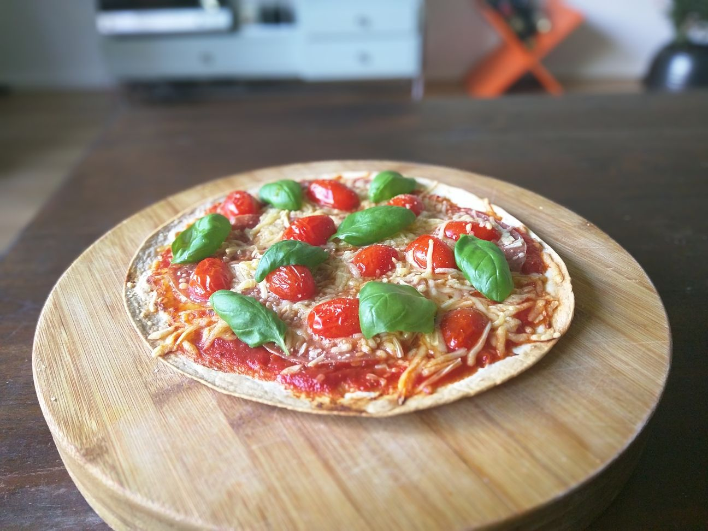
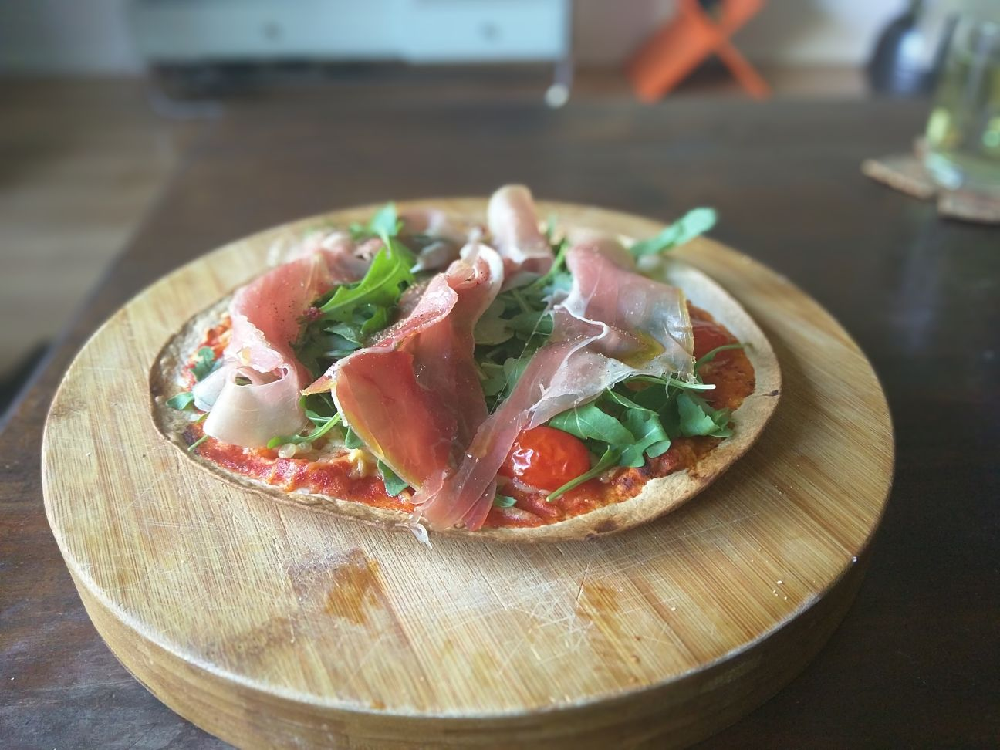

Copyright 2017 Mizzi
21 Mei 2017
Homemade pizza in 10 miuten
Deze pizza’s zijn lekker en lekker makkelijk. In een handomdraai ben je aan het smikkelen. Je eet je vingers er bij op. Dit is namelijk echt fingerfood!
pizza salami

pizza serrano

Verwarm de oven voor op 220 graden. Pak een tortilla en smeer er 4 el pastasaus op, doe er wat gehakte knoflook op en strooi er geraspte kaas overheen. Dan komt de topping; wat zal ik er eens op doen?. Mijn pizza-ding is ‘keep it simple’, maar je kan ook helemaal losgaan of je kan je leftovers er op knallen. Do your thing! Hoppatee. 5 minuten in de oven en smullen maar.
Copyright 2017 Mizzi